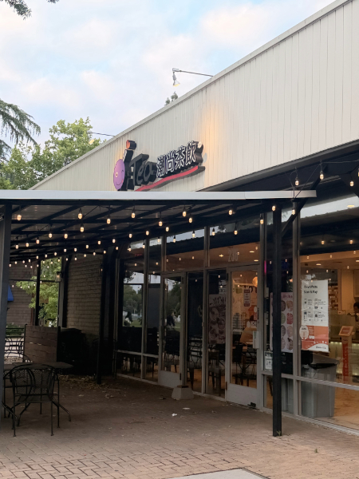

Visual Thinking Analysis
May 7, 2026
My partner’s images focus on the perspective of a tourist traveling through China, with a strong emphasis on the act of seeing and observing. Looking at her images, I found them to be deeply nostalgic, almost as if I had already lived a life in a foreign country without ever actually traveling there. The use of rustic, old-time imagery contributes to this feeling, creating a sense of memory and distance that feels both personal and unfamiliar. The composition and muted tones give the images a reflective quality, while the framing guides the viewer’s eye as if they are moving through the space themselves. While the subject matter is relatively clear, there is still a subtle sense of mystery in how these moments are captured, as if they are fragments of a larger story that is not fully revealed. To push the images further, experimenting with more abstraction or unexpected perspectives could enhance the emotional depth and make the narrative feel even more immersive and visually compelling.

In my image, at first glance, you would not fully understand the intention of the narrative. I want to reflect the idea of guessing and interaction with the artifact by incorporating playful elements that frame the image in a more intentional way. These elements encourage the viewer to look more closely and question what is happening, rather than immediately knowing it. This connects to my collection by focusing on how meaning is not always obvious, but instead revealed through engagement and curiosity. To improve the image, I could refine the composition or exaggerate these playful elements further to strengthen the overall visual impact.
With Care,
.png)